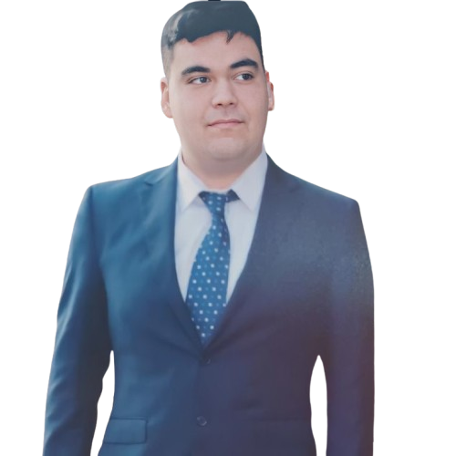

Ingeniero en
Código & Datos
Titulado de DUOC UC. Me especializo en actuar como el puente entre la operación cruda de un negocio y la arquitectura tecnológica.
No solo escribo código; analizo flujos de trabajo, automatizo tareas repetitivas y diseño bases de datos robustas para que las empresas tomen mejores decisiones.